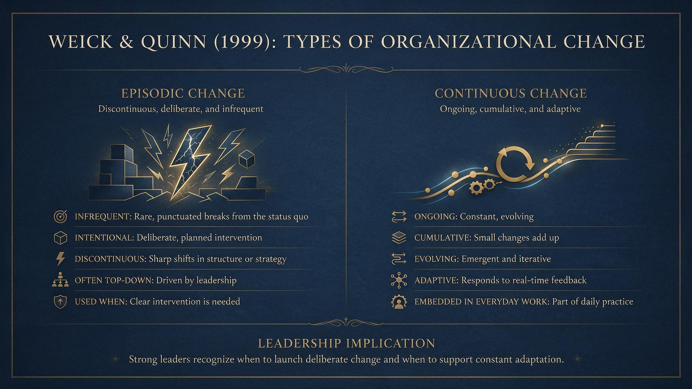
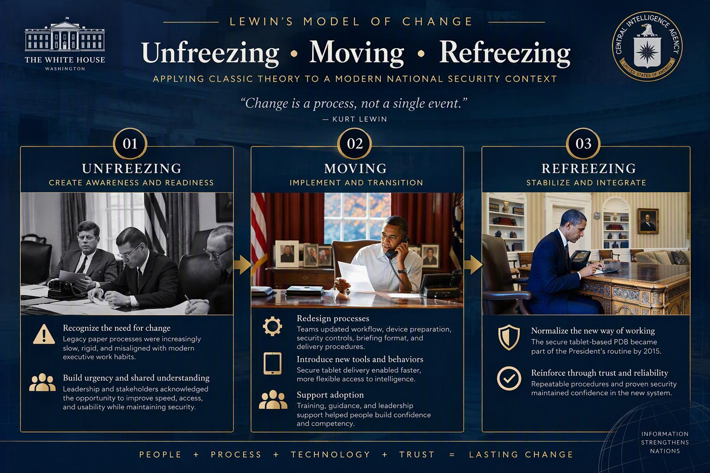
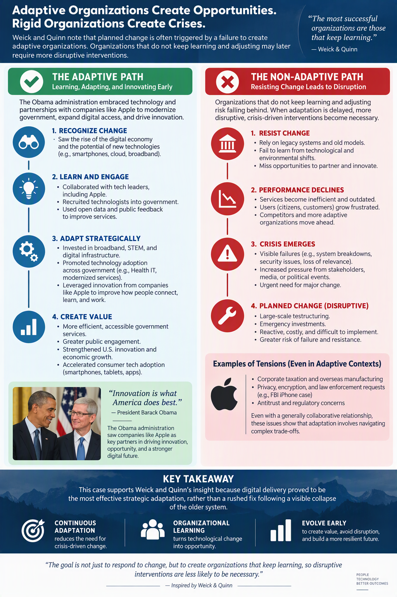

Obama at his desk with an iPad visible. This site presents an organizational change: the modernization of presidential intelligence delivery, moving from a legacy paper-based process to secure, tablet-based access. It applies Lewin, Armenakis et al., Tsoukas and Chia, and Weick and Quinn to a real-world case involving technology, workflow redesign, user adoption, leadership support, and trust in a high-stakes environment.
Case Overview
Why this is organizational change
Organizational change includes shifts in routines, technologies, communication patterns, and work coordination, not only formal structural changes. The President’s Daily Brief case fits this definition because the delivery process evolved across decades in response to user needs, executive work habits, and technological possibilities, culminating in secure tablet delivery by 2015.
This case is effective for the assignment because it shows how a trusted legacy process can be redesigned without sacrificing reliability, security, or usefulness to the primary decision-maker.
Publicly supported facts
Timeline of the shift
1961: CIA officials created the President’s Intelligence Checklist to provide President Kennedy with a shorter and more usable intelligence digest.
1964: The product was redesigned for President Johnson and became the President’s Daily Brief.
2012: Public reporting described the president as receiving daily briefing material on a connectivity-limited iPad.
2015: CIA Director John Brennan stated publicly that the PDB arrived at the Oval Office on an iPad rather than on paper.
Applied course models
Armenakis et al. (2007)
Readiness for change
Armenakis and colleagues frame readiness as a pattern of beliefs about discrepancy, appropriateness, efficacy, principal support, and valence. That framework fits this case because a secure-tablet transition could not succeed through technology alone. People had to believe the change was necessary, workable, supported, and beneficial.
DiscrepancyWhy change is necessary.
AppropriatenessWhy this solution fits.
EfficacyWhy people can do it.
SupportWhy leaders back it.
ValenceWhy it matters personally.
Weick and Quinn (1999)
Episodic and continuous change

Weick and Quinn distinguish episodic change as infrequent, intentional, and discontinuous, while continuous change is ongoing, cumulative, and embedded in everyday adjustment. This case reflects both forms because the adoption of secure tablet delivery was a clear intervention, but it also required ongoing refinements in handling, support, security, and routine use. AI tools were used to generate this image using Copilot, based on information provided by the student.
Lewin in practice: Unfreezing, moving, and refreezing

AI tools were used to generate this image using Copilot, based on information provided by the student.
Types of change
Type
Meaning
Application to this case
Episodic change
Distinct, intentional intervention that interrupts an established pattern.
The move from paper-centered delivery to secure tablet delivery.
Continuous change
Ongoing cumulative adjustments in daily work and interaction.
Refining workflow timing, device handling, support, and security practices over time.
Planned change
Change intentionally shaped through leadership action and design.
Leaders aligned mission needs, technology, and executive use requirements before the legacy method became a visible failure.
Reactive risk
Change delayed until crisis, misfit, or breakdown forces action.
This case illustrates why adaptive organizations should not wait until older routines become obstacles.

An infographic of the Weick-Quinn model as applied to this case study. AI tools were used to generate this image with Copilot, based on research provided by the student.
Tsoukas and Chia analysis
Tsoukas and Chia (2002) argue that organized action depends on recurring categories and stable understandings, yet real situations are never perfectly identical, so actors must constantly interpret and adjust. Their discussion helps explain why people do certain things in certain ways at certain times: they rely on routines, but they also improvise when conditions shift.
Applied here, a person reacting to change is not merely accepting or resisting a new rule. That person is judging whether the old habit still fits, whether the new process makes sense, and whether reliable action remains possible in the changed environment. This helps explain why early responses to change are often cautious: people are protecting their competence as they test a new way of working.
Apple as a symbol of American innovation: Obama often highlighted Apple as an example of innovation, entrepreneurship, and leadership in product design. The administration generally saw companies like Apple as important drivers of economic growth and competitiveness. Consumer technology adoption accelerated during this period. Smartphones, tablets, cloud services, mobile apps, and digital ecosystems became mainstream, with Apple playing a central role through the iPhone and iPad.
Changing behaviors
Important future workplace attitudes and skills include adaptability, disciplined communication, systems thinking, learning agility, emotional steadiness, and respect for security and process integrity.
Global vs local
A global organization usually faces greater pressure to address continuous change because it operates across more complex political, technical, cultural, and risk environments than a local organization does.
Leadership lesson
Effective leaders do not simply announce change. They make it understandable, legitimate, supported, and doable for the people expected to carry it out.
References
Armenakis, A. A., Harris, S. G., & Mossholder, K. W. (1993). Creating readiness for organizational change. Human Relations, 46(6), 681-703.
Holt, D. T., Armenakis, A. A., Feild, H. S., & Harris, S. G. (2007). Readiness for organizational change: The systematic development of a scale. The Journal of Applied Behavioral Science, 43(2), 232-255. https://doi.org/10.1177/0021886306295295
Tsoukas, H., & Chia, R. (2002). On organizational becoming: Rethinking organizational change. Organization Science, 13(5), 567-582. https://doi.org/10.1287/orsc.13.5.567.7810
Weick, K. E., & Quinn, R. E. (1999). Organizational change and development. Annual Review of Psychology, 50, 361-386. https://doi.org/10.1146/annurev.psych.50.1.361
Central Intelligence Agency. (2015, September 16). Brennan delivers keynote at President’s Daily Brief public release event. https://www.cia.gov/stories/story/brennan-delivers-keynote-at-presidents-daily-brief-public-release-event/
Stanley, J. (2012, September 14). The president reads his daily brief on an iPad (and other lessons from the NSA). American Civil Liberties Union. https://www.aclu.org/news/national-security/president-reads-his-daily-brief-ipad-and-other-lessons-nsa